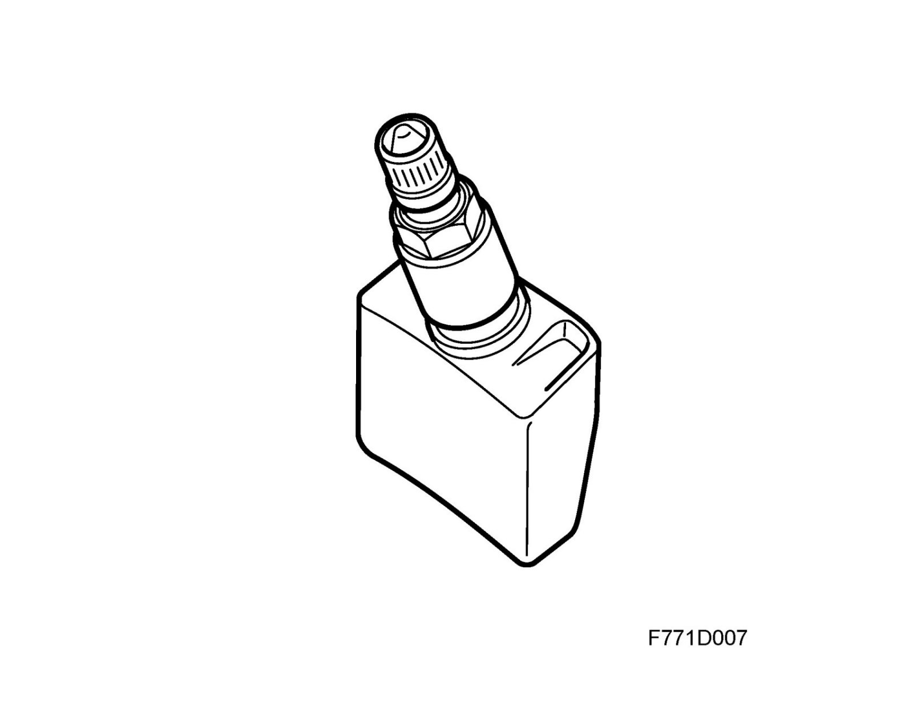

Tire Pressure Sensor: Description and Operation
Pressure sensor, tire pressure (754)Position
The pressure sensor is located in the tire valve.

Main function
The sensor transmits information on tire pressure, temperature and direction of rotation to the control module, which in turn informs the driver is a tire has low pressure.
Type
The tire pressure sensor is an integrated sensor with transmitter, battery and valve. It comprises a plastic housing, with an electronic unit, which is joined to an aluminum housing with a valve. On the valve are a tapered seal and a crown nut, which is used to fit the valve into the corner of the wheel. The sensor weighs approximately 38 g.
Engaging
The sensor houses a 3V (500 mAh) lithium battery that is activated when speed exceeds 20 km/h. The battery is not replaceable.
Function
The pressure sensor measures tire pressure, temperature and direction of rotation. The temperature value is only used in certain markets. Each sensor has a unique code which is transmitted with every information block. The sensors are fitted into special Saab rims. During normal operation, the sensor takes a reading every 10 seconds and transmits a signal once every minute. If the pressure has dropped by more than 0.08 bar from the latest reading, a new signal is transmitted after 10 seconds.
When battery voltage is low, the control module transmits a system fault message on the I-bus.